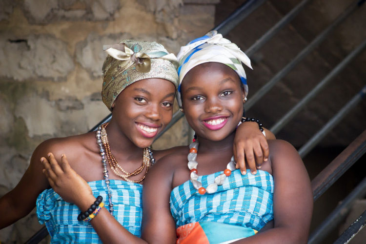

Tremendous power lies within you, harness its full potential
Life is but a day; a fragile dew-drop on its perilous way from a tree’s summit. It is a tapestry woven by the decisions we make. We lead our lives like water flowing down a hill, going more or less in one direction until we splash into something that forces us to find a new course. It is not that we have so little time but that we lose so much. The life we receive is not short, but we make it so; we are not ill provided but use what we have wastefully. Life is the biggest match we will ever play, and only we can win or lose depending on the quality of our game. The better we become in determining our top priorities and setting boundaries to protect them, the greater potential we’ll have for achieving.
Life is not like water. Things in life don't necessarily flow over the shortest possible route. If you’re going to while away the years, it’s far better to live them with clear goals and fully alive than in a fog. You cannot push yourself to the limit if you have none. Exerting yourself to the fullest within your individual limits is the essence of life. You have two lives. The second one starts when you realize that you only have one. The choices you make now, the people you surround yourself with, they all have the potential to affect your life, even who you are, forever. Don’t wish to stand out in this pretentious world, when simply being yourself can do the trick!
